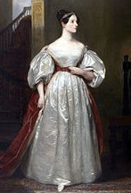
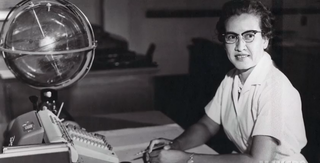
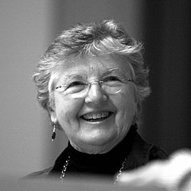
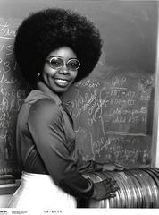

Ada Lovelace (1843)
 Lovelace's own annotations to a paper by Italian engineer, Federico Menabrea, described for the first time how a hypothetical 'Analytical Engine' could be programmed before the first computer was even invented.
ENIAC (1946)

The coders for the pioneering ENIAC project in the USA were an all female team consisting of Kathleen MacNulty,
Jean Jennings, Betty Snyder, Mary Wescoff, Frances Bilas and Ruth Lichterman. They established core software principles
used today, such as using break points (- pausing a program at various points while it's running -) to help debug (or "fix")
faulty computer programming. The modern computer as we know it had not yet been invented, so the ENIAC computer
was an odd looking object. It was as big as a room, with wires and flashing buttons. However, it was able to direct a missile!
Find out more about the ENIAC coders
here.
Ida Rhodes (1949)
Rhodes developed and programmed some of the earliest computers. She was a Ukrainian Jewish female mathematician at a time when this was not very common. Rhodes co-designed a computer programming language called C-10. It was for a computer called the UNIVAC I, which was the first general-purpose electronic digital computer made for businesses in the USA.
Katherine Johnson 1953
 Johnson was an Afro-American maths genius and "human computer" whose calculations put the first ever American astronaut in space. She worked for NASA and NACA (the organisation that was the predecessor for NASA) for 33 years and helped pioneer the use of machine computers to perform the task of calculating complex trajectories (flight paths) in space. She worked for NASA's Project Apollo and Project Mercury. For Project Mercury, she verified the first calculations of an actual electronic computer. A NASA biography of Katherine Johnson can be found here.
Grace Hopper (1954)
 Hopper worked on the world's first programmable computer, the Harvard Mark 1, and was the first to devise machine-independent
programming. Previously, any given coding language only worked on one device... There was no language that could be used
across different computing machines. So, Hopper made the first portable software coding language when she invented FLOWMATIC,
which evolved into COBOL, which is still used today.
Hopper worked on the world's first programmable computer, the Harvard Mark 1, and was the first to devise machine-independent
programming. Previously, any given coding language only worked on one device... There was no language that could be used
across different computing machines. So, Hopper made the first portable software coding language when she invented FLOWMATIC,
which evolved into COBOL, which is still used today.
Hopper also invented the first computer compiler as part of her work, which is a code translater that translates a programming language into machine code. Machine code is something that can be 'read' by a computer, and is always binary, which means it is made-up entirely of zeros and ones. It is necessary to perform this step to make any coding program do-able, because computers only "understand" binary language. Everything we do on a computer is turned into binary for it to be processed, and then turned back into language we understand after the computer has done what we've asked. A short video about Hopper's life can be found here.
Frances E Allen (1957-2002)
 So, now you know what a compiler is! Allen was a pioneer in optimising compilers. She made the long process of converting software programs into zeroes and ones a lot faster and easier. This work helped established the foundations of modern computing as we know it. She worked for IBM from 1957 to 2002 and was the first woman to win the Turing Award in 2006.
Margaret Hamilton (1961)
Hamilton was a computer scientist who led the Software Engineering Division of the MIT Instrumentation Laboratory, which in 1961 worked with NASA to develop the Apollo program’s guidance system. Without this, the spacecraft would not have travelled in the correct direction. The Apollo project took the first astronaut to the moon. Margaret Hamilton was the first person who used the words “software engineering” to describe her line of work.
Carol Shaw (1978)
Do you like computer games? Well, Shaw is one of the first ever female designers and programmers of video games! She worked for the Atari games company from 1978 to 1980.
Karen Sparck Jones (1982)
Jones programmed computers to understand human language. She was an English self-taught coder who worked out how to create a basic search engine… like the ones we use today to look things up on the internet (Google, Yahoo, Duck Duck Go, etc).
Valerie Thomas (1980-current)
 The code of Valerie Thomas allowed NASA to observe the Earth from space for the first time. Her Illusion Transmitter, patented in 1980, meant that images could be transmitted across long distances using dome-shaped mirrors. Thomas worked for the Landsat program and wrote the code that took in data from a Landsat CCT (computer compatible tape) and printed it out in a form that was easy for scientists to read. She learned and used the coding language FORTRAN for her work. Valerie Thomas is now a mentor for students through the organisation S.M.A.R.T and she works to encourage the participation of women of colour in science and tech. You can hear a talk about her here.
Radia Joy Perlman (1984 - today)
Radia Perlman is most famous for her invention of the spanning-tree protocol (STP). This is not an easy concept to explain, but her work has had a huge effect on our use of the worldwide web today. Her many inventions relate to how digital networks, or pathways, work to effectively transmit the information that we access through the internet.
Elizabeth Feinler (1989 - today)
Feinler was an early pioneer in the creation of the internet. She was the director of the Network Information Systems Center at the Stanford Research Institute and her team operated the Network Information Center (NIC) for the ARPANET. The ARPANET was an early version of what evolved into the internet. Lots of the domain names that we are familiar with —.com, .gov, .org, .net, and .edu— come from the work of Feinler and her team.